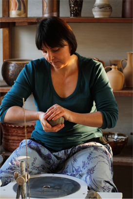

O mně
Mám ráda hezké a užitečné věci a ještě
raději je vyrábím.
raději je vyrábím.
Věnuji se výtvarným technikám, zváště výrobě keramiky, grafice a malbě.
Navrhuji a realizuji interiérové doplňky i užitkovou keramiku na zakázku.
Zájemcům o studium výtvarných oborů poskutuji odborné konzultace a praktickou přípravu na talentové zkoušky.
Studovala jsem na SPŠ grafické obor grafická úprava tiskovin, na Pedagogické fakultě UK Praha obory český jazyk a výtvarná výchova a poté dálkově na SOU řemeslném obor umělecké keramiky. Od roku 1990 žiji s rodinou v Hořicích v Podkrkonoší. Snažím se propojovat zkušenosti z výtvarné, řemeslné a lektorské práce.
